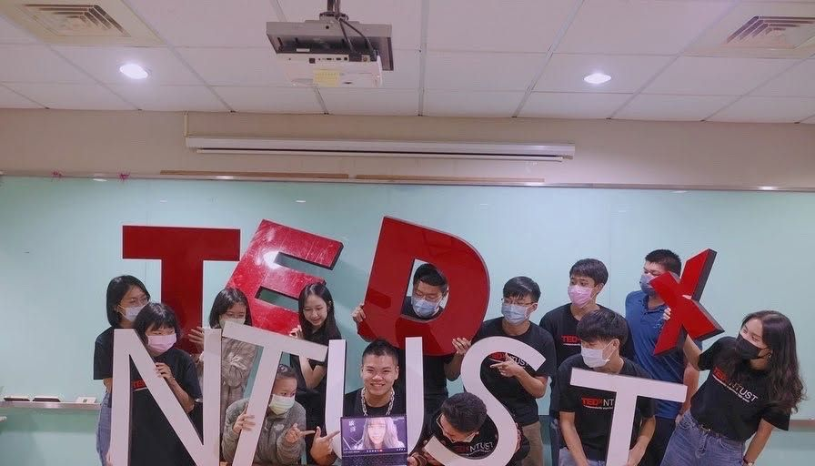
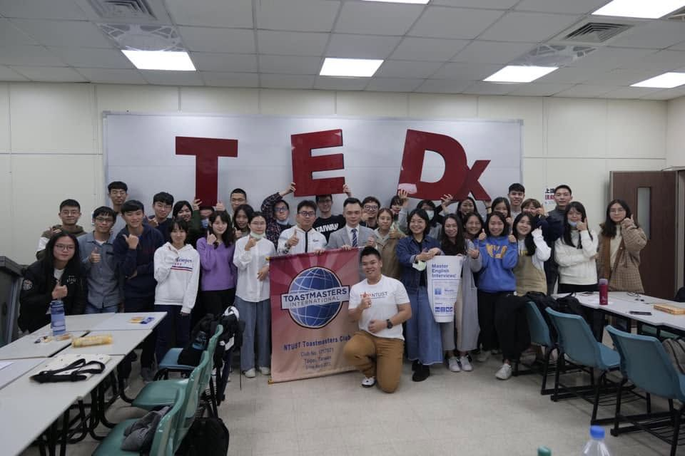

A TEDx license is a small organization with a big brand attached: you recruit speakers, shape the program, find sponsors, and fill a hall — every year, with a volunteer team. In 2020 the hall stopped being an option.
As curator I led the 24-member team across topic design, speaker recruitment and marketing strategy, and owned the relationship with sponsors.
Each season started from a theme and a target audience, then speaker recruitment worked backwards from the questions we wanted answered on stage.
Packaged what a sponsor actually got — audience, content, association — and reported back on it, which is what made the later growth possible.
Rebuilt the marketing and event strategy for a remote audience: content-first distribution, online formats, and sponsorship tiers that didn’t depend on a lobby.

